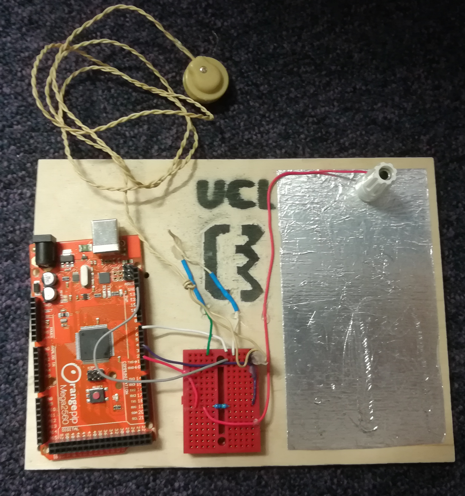

 This interactive workshop covers microcontroller programming and the concept of capacitive touch. It is a flexible task that can be aimed at a range of abilities. For younger ages the boards can be preprogramed before the workshop and students build the circuit and work in groups to think of applications. More adept groups can work on programming the Arduino themselves and modify the code in order to learn programming principles.